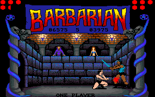
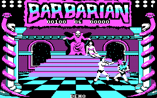
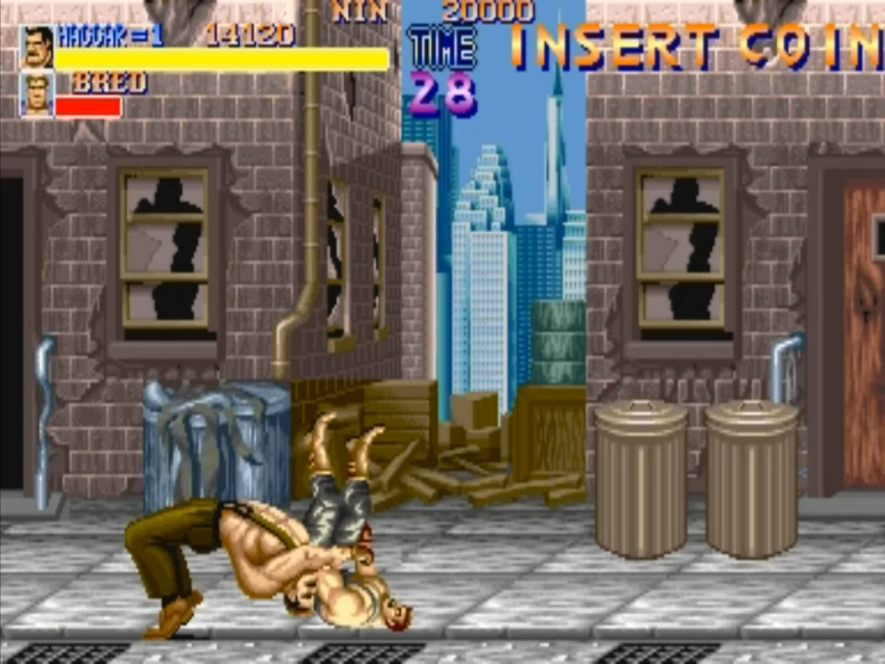
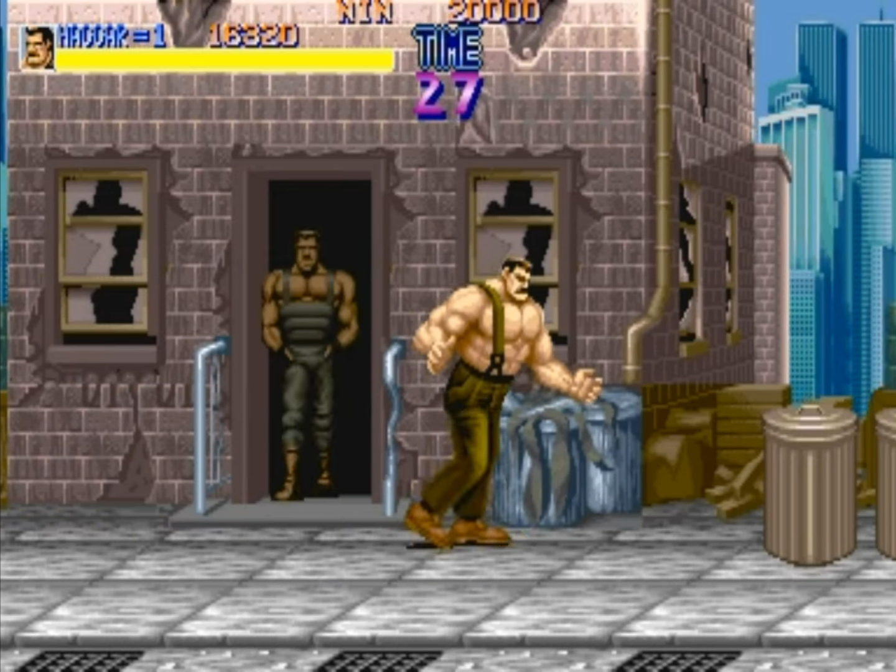
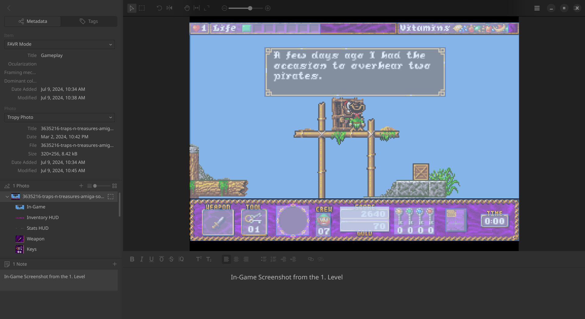
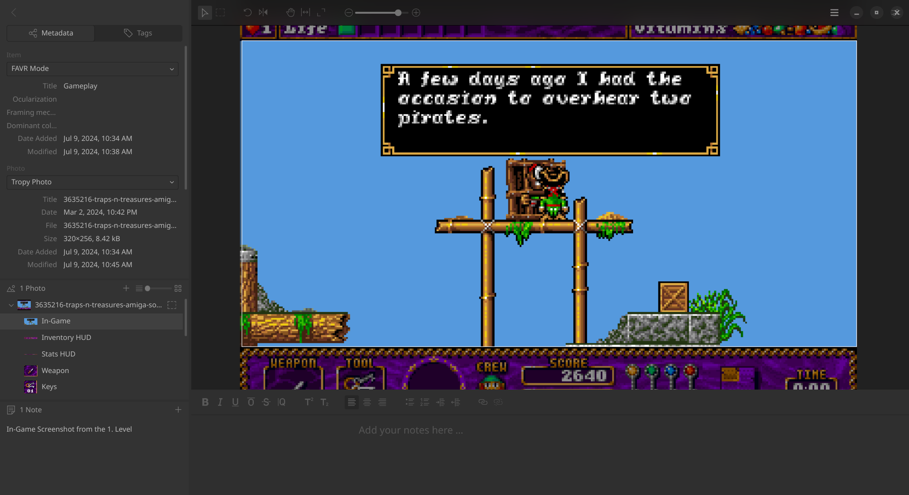

A handful of pixels of blood
Decoding early video game graphics with the FAVR ontology
![]()
What is the purpose of blood splattering onto the screen in a video game? Does it serve functional value, or is it mere intended to shock the user? Up to this day, little advance has been made in studying video game graphics’ material and structural conditions. They are not only narrative and aesthetic devices comparable to films but also hold functional information for players and are of an interactive nature (Fizek 2022; Gerling, Möring, and Mutiis 2023). Classical visual analysis struggles to encompass video game images because they focus on analogue or time-based visual media (Arsenault, Côté, and Larochelle 2015). How can blood spurting from a virtual body be analyzed? This research applies and extends the Framework for the Analysis of Visual Representation in Video Games (FAVR) to conduct and further adequate research on video game images.
Video Game Graphics, Visual Analysis, FAVR Framework, 1980s-1990s Home Computers, Video Game Studies
The 1980s marked the arrival of the home computer. Computing systems became affordable and were marketed to private consumers through state-supported programs and new economic opportunities (Haddon 1988; Williams 1976). Early models, such as the ZX Spectrum1, Texas Instrument TI-99/4A2, or the Atari3, quickly became popular in Europe and opened the door for digital technology to enter the home. This period also marks the advent of homebrew video game culture and newly emerging creative programming practices (Swalwell 2021; Alberts and Oldenziel 2014). As part of this process, these early programmers not only had to figure out how to develop video games but also were among the first to incorporate graphics into video games. This created fertile grounds for a new array of video game genres and helped popularize video games as a mainstream media.
I’m researching graphics programming for video games from the 1980s and 1990s. The difference to other visual media lies in the amalgamation of computing and the expression of productive or creative intent by video game designers and developers. The specifics of video game graphics are deeply rooted in how human ideas must be translated into instructions that a computer understands. This necessitates a mediation between the computer’s pure logic and a playing person’s phenomenological experience. In other words, the video game image is a specific type of interface that needs to take care of a semiotic layer and offer functional affordances. I am interested in how early video game programmers worked with these interfaces, incorporating their own visual inspirations and attempting to work with the limited resources at hand. Besides critical source code analysis, I also extensively analyze formal aspects of video game images. For the latter, I depend on FAVR to properly describe and annotate images in datasets relevant to my inquiries. The framework explicitly deals with problems of analyzing video game graphics. It guides the annotation of images by their functional, material, and formal aspects and aids in analyzing narrativity and the rhetoric of aesthetic aspects (Arsenault, Côté, and Larochelle 2015).
The video game image also differs substantially from the image in animation or other software interfaces, to which they are often compared. Next to its interactivity, it also holds a double function of telling the game as well as offering the affordances to let the player participate. It is between animation and the user interface of the software, with added techno-visual dimensionalities such as resolution or frame rate. The concepts of the “ergodic animage” (Arsenault, Côté, and Larochelle 2015) and “algorithmic images” (Fizek 2022) aptly describe these video games-related aspects. The two terms imply that video game images are of a calculated nature and don’t represent reality but construct one and display the operations of software. Further, these images only work when players participate in them.
Classical visual analysis is limited in its ability to deal with video game images due to their visual and material diversity, as well as a disciplinary vocabulary that is not a good fit for video game graphics (Arsenault, Côté, and Larochelle 2015). The same is true for the formal analysis of video game images through computer vision models, for example, towards object or image classifications. Neither general-purpose models nor such specialized user interfaces can deal with the visual diversity of video game images and interfaces. FAVR fills this gap by explicitly concentrating on what is displayed on the screen rather than what these images convey. For FAVR, the image on the screen becomes a specific type of interface at the intersection of the game’s rules and mechanics and their visual mediation.
While the framework can identify different game modes and the different functionalities those screens can encompass, more intricate details can escape an analysis. FAVR distinguishes between tangible, intangible, and negative space, as well as agents, in-game and off-game elements, and interfaces. Whereas the aspect of space concerns the overall composition of the screen, the second set of attributes circumscribes the construction of the image. Intangible space, for example, is concerned with information relevant to gameplay but without the direct agency of the player. Examples are life bars or a display of the current score. As another example, off-game denotes decorative background elements. Being of a time-based and interactive nature, some of the relevant information only unfolds as animation or through player interaction. Further, not all visual mediations of the games’ operation are represented as expected in software interfaces or classic visual compositions.


A simple example could be blood spurting from an agent, which can be any gameplay-relevant character on screen. The blood holds information relevant to the player, indicating that the character on screen got hurt and may prompt a change in play behavior. Whereas a life bar can represent the player’s character health, such indications are usually absent for enemies. Some video games also play with the distinction between in- and off-game planes. In Final Fight (Capcom, 1989, Arcade), our character walks from left to right in a raging city and, on the way, fights numerous enemies entering the screen from left and right. The off-game plane, the background, is composed of run-down houses and alleyways. At one point during the game, those houses’ doors start to open and spawn enemies as well. This mixes up the formerly established convention of what visual information is relevant for gameplay in terms of interactive and decorative elements.


Another relevant point regarding FAVR is its limitation to qualitative analysis and manual application. Since I am interested in a larger historical trajectory of video game images in the 1980s and 1990s, I need to leverage digital tools and computational methods to aid my research. I work with two image corpora in my research. A smaller corpus contains 1525 screenshots from 35 video games from Switzerland from 1987-1998. Acquiring a sufficient number of screenshots from old video games from Switzerland is difficult due to their low popularity. The corpus consists of video stills from Let’s Plays4 and screenshots from various video game databases. The second and larger corpus consists of 115’848 screenshots from 4316 video games and is solely sourced through the Mobygames database. Mobygames is one of the largest community-driven platforms for the collection of knowledge on video games. Being maintained mainly by amateurs and video game enthusiasts is not without problems (Pfister et al. 2023). There are open questions on accessing data, searchability, and, most importantly, completeness. Working with Mobygames makes it difficult to assess what will be missing from the dataset. Despite these shortcomings, the work of the community behind such database platforms is of immense value to video game research.
To leverage the potential of these corpora, I need to be able to apply FAVR in a formalized and digital method. To that end, I created a linked open ontology that derives and expands on FAVR (Demleitner 2023). It is based on CIDOC and can be applied in Tropy or similar image-annotation tools by providing templates. Other video game-related ontologies were not suitable for the tasks at hand. Most of the better-developed ontologies, such as Video Game Ontology (VGO), Digital Game Ontology (DGO), and Game Metadata and Citation Project (GAMECIP) are concentrating on describing the contents of a game and are mostly abandoned (Martino et al. 2023). Interestingly, both the VGO and VideOWL try to be of benefit to the industry and game developers. In turn, I’m mainly interested in the historic contextualization of video games and the practices of video game development.


So far, I was able to formalize the framework’s aspect on game modes and space, as well as create annotation templates that are building on those aspects. These were made for Tropy, a software that enables researchers to organize their visual material, properly describe the images with metadata, and make create annotations. The templates so far allow for the annotation of video game images regarding their overall composition of the screen, spaces as well as game modes. The screenshots provided above demonstrate the annotation of an in-game screenshot of Traps ‘n’ Treasures (Starbyte, 1993, Amiga). Such an annotation allows the comparison with other games, for example regarding the ratio of dynamic versus static image space. Such a ratio was an important factor in video game development, as dynamic image space needed more resources. The annotation can then be exported exportable as JSON5 and used in further analysis and digital methods.
To be able to analyze large quantities of video game images towards their functionality as interfaces, digital methods need to be leveraged. Computer vision (CV) models are of limited help regarding this inquiry. CV models are generally trained to extract semantic value, focusing primarily on object classification (Kurfess 2003) or segmentation tasks (Xu 2024). However, what is considered of semantic value typically does not include user interface elements, particularly in the specific context of video game images with their dual functionality. Image similarity cluster visualizations based on embeddings calculated using both classic convolutional neural network6 models like ResNet101 (He et al. 2015) and newer transformer7 models such as DINOv2 (Oquab et al. 2024) have shown [demleitnerThgieComingofageofthevideogameimageInitial2024] that these models are quite capable of recognizing what equals to modes in FAVR, although they lack the ability to properly annotate the images on that level. This limitation is likely due to the visual diversity present in video game images, where narrative elements and the visual mediation of game mechanics coexist on a wide spectrum. Visual Material annotated in Tropy with the FAVR ontology could potentially be used to train or fine-tune new models that are more adept at recognition in this domain.
The Framework for the Analysis of Visual Representation in Video Games is a welcomed vantage point for my research inquiry. After translating the framework into a linked open ontology, further work is needed to refine and expand it to encompass more subtle aspects of video game interfaces. Whereas the ontology developed so far works on a formal level, I have yet to research to what extent FAVR can be leveraged to applications of distant viewing of larger video game image corpora. Despite being implemented only in a limited form so far, the FAVR has proven to be a valuable tool in analyzing video game images towards their formal, discursive, and historical aspects.
Media List
- Fig. 1-2: Screenshots from Barbarian (1987) - MobyGames, accessed July 09, 2024
- Fig. 3-4: Screenshots of Final Fight (Arcade) Playthrough - NintendoComplete - YouTube, accessed July 09, 2024
- Fig. 5-6: Screenshots provided by the author
- Barbarian (Palace Software Inc, 1987, Amiga, DOS)
- Final Fight (Capcom, 1987, Arcade)
- Traps ‘n’ Treasures (Starbyte, 1993, Amiga)
References
Footnotes
ZX Spectrum, accessed May 13, 2024↩︎
Atari 8-bit computers - Wikipedia, accessed July 12, 2024↩︎
Let’s Play - Wikipedia, accessed July 09, 2024↩︎
favr-ontology/examples/ball-raider-1987-main-gameplay.json, accessed July 09, 2024↩︎
Convolutional neural network - Wikipedia, accessed July 19, 2024↩︎
Transformer (deep learning architecture) - Wikipedia, accessed July 19, 2024↩︎